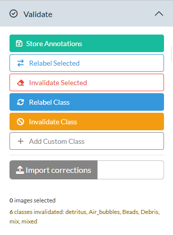

This guide walks through the complete workflow for processing a cruise with AlgAware-IFCB, from loading data to generating a finished Word report. Follow the steps in order.
Before starting, make sure you have completed the installation and configuration steps.
Network requirement: This workflow requires access to the SMHI internal network. Connect via the SMHI office network or SMHI VPN before proceeding.
App layout
The application has two main areas:
- Sidebar (left) — a collapsible accordion with four panels: Settings, Data, Validate, and Report. This is where you trigger actions.
- Main panel (right) — tabs for browsing and reviewing data: Validate (image gallery), Samples, Images, Maps, Plots, CTD, and Summary.

2. Load cruise data
Open the Data panel in the sidebar (it is open by default).

- Choose Cruise or Date Range using
the radio buttons.
- Cruise: select the cruise number from the dropdown after fetching metadata. For cruise numbers to appear, the yearly metadata file must have been uploaded to the IFCB dashboard — see Uploading Metadata to the IFCB Dashboard.
- Date Range: pick start and end dates.
- Click Fetch Metadata. The app downloads the sample list from the IFCB Dashboard and populates the cruise dropdown. The status text below the buttons shows how many bins and cruises were found.
- Select the correct cruise from the dropdown (if using cruise mode).
- Click Load Data. This
single button runs the full loading pipeline:
- Matches bins to AlgAware monitoring stations
- Downloads raw (
.roi/.hdr) files and feature files from the Dashboard - Copies HDF5 classification files from your Classification Path
- Reads and processes the classifier predictions
- Computes biovolumes and station summaries
- Collects FerryBox chlorophyll data (if configured)
Files are cached locally. Subsequent loads of the same cruise are much faster because the downloaded files already exist in your Local Storage Path.
Once loading is complete, the Validate panel in the sidebar opens automatically.
3. Browse and validate images
The validation philosophy
The goal is to browse through every class for both regions (Baltic Sea and West Coast) before generating the report. A class that you leave untouched is considered validated — you have seen the images and accepted the classifier’s predictions as correct. You do not need to take any action unless you find something that needs correcting.
How much effort you put into re-labelling is entirely up to you. At minimum, step through each class with the arrow buttons and scan the images. If everything looks right, move on. Only act when you see clear misclassifications or something unusual.
Tip: Spend a bit more time exploring the unclassified images, as they often reveal gaps in the model. They may include taxa not yet represented, as well as groups that are currently poorly classified. In some cases, you may need to add custom classes for new taxa or provide additional annotations to improve performance.
Gallery (main Validate tab)
The main panel switches to the Validate tab showing the image gallery.

- Region toggle — switch between Baltic Sea and West Coast. Each region has its own class list. Work through both before generating the report.
-
Class dropdown — select a taxon to browse. Use the
◀ and ▶ arrows to step
through classes one at a time. Each entry shows two names: the raw class
name as output by the classifier model, and a clean taxonomic name in
blue — this is the name images will be aggregated to in the
report. Classes ending in
-like(or equivalent cf. classes) are mapped to the taxonomic level above and merged with that parent taxon. - Page size — choose 50, 100, or 200 images per page.
- Select Page — tick all images on the current page for a validation action.
- Deselect — clear the selection.
- Measure tool (ruler icon) — click and drag on an image to estimate size on screen.
Click any image to select or deselect it individually.
Validate panel (sidebar)
The Validate panel in the sidebar contains the action buttons. They act on whatever is currently shown or selected in the gallery.

| Button | What it does |
|---|---|
| Store Annotations | Save selected images to the SQLite database (permanent, for classifier training) |
| Relabel Selected | Move selected images to a different class (session-only) |
| Relabel Class | Move all images of the current class in the current region to a different class (session-only) |
| Invalidate Class | Move all images of the current class to unclassified, so they no longer contribute to that taxon’s biovolume or appear in plots and reports under that name (session-only) |
| Add Custom Class | Add a taxon not in the database or taxa lookup (session-only) |
| Import corrections | Upload a corrections CSV from a previous session to replay earlier work |
The status summary below the buttons shows how many images are selected and a running log of corrections made this session.
When to use each action
Re-labelling is the most common correction. Use Relabel Selected to move a handful of individual images, or Relabel Class when the entire class is systematically wrong (e.g. all images are actually a different species).
Invalidating a class with Invalidate Class is appropriate when the class contains so many errors that it should not appear under that taxon name in biovolume summaries, plots, or the report. The images are moved to the unclassified pool — they remain visible in the gallery and still contribute to the unclassified fraction, but no longer count as that taxon.
Storing annotations with Store Annotations is intended for situations where you encounter something unusual — a rare species, a life stage the classifier has rarely seen, or images where you are confident in the identification and the training data coverage is poor. Saving these images helps improve future classifier versions. For routine corrections use the relabel buttons instead — those are faster and do not require a configured database folder.
Session-only vs. permanent: Relabelling and invalidation only affect the current session. To carry corrections forward to the next session, export the corrections log from the Report panel and re-import it using Import corrections.
4. Review and exclude samples (optional)
Click the Samples tab in the main panel to see all loaded samples.

The table lists every sample bin with its station, region, timestamp, and ROI file size. Samples marked Excluded are removed from all summaries, maps, mosaics, and the report — but remain in memory and can be re-included at any time.
Typical reasons to exclude a sample:
Instrument problem — the IFCB was clogging, running air, or otherwise malfunctioning during that sample. You may notice this in the gallery as a bin dominated by bubbles, debris, or empty frames.
Mainly bubbles — a sample where the vast majority of images are air bubbles rather than particles, often caused by a brief air intake. Check the ROI file size in the table: an unusually small file can indicate very few real particles were captured.
FerryBox system fault — if you know the ship’s flow-through system was shut down, flushing with cleaning fluid, or otherwise not sampling surface water at the time of the IFCB trigger, the sample does not represent the water mass and should be excluded.
Station mismatch — a sample that was spatially matched to a station but was actually collected well outside the expected position (e.g. during transit between stations).
Select rows in the table, then click Exclude Selected to exclude them.
Select excluded rows and click Include Selected to reinstate them.
Click Include All to reset all exclusions.
5. Load CTD and chlorophyll data (optional)
Click the CTD tab in the main panel.

This step improves the chlorophyll map and adds fluorescence profile panels and Chl-a time-series panels to the report.
-
CNV Folder Path — paste the path to the cruise’s
Cnv/folder (the app searches recursively for.cnvfiles). This folder is typically found inside the expedition’sEXRAPPfolder, e.g.EXRAPP/2026/CTD/2026/Cnv. - LIMS data.txt — click Browse and select the LIMS export file (optional but recommended for verified Chl-a values). For the best time series plots, export all chlorophyll data for the current year from LIMS — not just the current cruise — so that earlier station visits from the same year appear as points in the historical comparison panels.
- Click Load CTD Data.
After loading, regional panels appear in the tab. The tab title gains a green loaded badge to confirm CTD data is ready for the report.
What is shown in the chlorophyll map? See Chlorophyll map options below.
6. Design image mosaics
Click the Images tab in the main panel.

The image mosaics (one for Baltic Sea, one for West Coast) are grids of representative phytoplankton images included in the Word report. The taxa are pre-selected and ordered by biovolume, with the most dominant taxon first — giving a visual summary of what characterised the phytoplankton community during the cruise.
- Choose a region (Baltic Sea or West Coast).
- Set the number of images per taxon.
- Select taxa using the taxon picker (top taxa by biovolume are pre-selected).
- Click Generate Mosaic. The app picks random images for each taxon and assembles the grid.
- Click any individual image to re-roll a new random image for that taxon only.
Repeat for the other region. Both mosaics must be generated before the Report panel shows them as ready.
7. Review maps and plots
The Maps and Plots tabs in the main panel update automatically as data loads and corrections are applied.
- Maps tab: image count map, phytoplankton group composition pie map, and chlorophyll map.
- Plots tab: heatmap and stacked bar chart for Baltic Sea and West Coast.
- Summary tab: interactive, sortable table of biovolume per station and taxon.
No action is required — these tabs are for visual review before generating the report.
8. Generate the report
Open the Report panel in the sidebar.

Chlorophyll source
The Chlorophyll source dropdown at the top of the Report panel selects which data source is used for the chlorophyll map in the report. The dropdown shows only the sources that have been loaded:
| Option | Requires |
|---|---|
| FerryBox | FerryBox data path configured in Settings |
| CTD (0–20 m) | CNV files loaded in the CTD tab |
| LIMS bottle (0–20 m) | LIMS data.txt loaded in the CTD tab |
| LIMS hose (0–10 m) | LIMS data.txt with SLA samples loaded in the CTD tab |
The best available source is pre-selected automatically (hose > bottle > CTD > FerryBox). See Chlorophyll map options for a full explanation of how each source is calculated.
Report readiness checklist
The checklist at the top of the Report panel shows which optional components are ready:
- IFCB data loaded — turns green after a successful Load Data.
- CTD data — turns green after loading data in the CTD tab.
- Baltic mosaic — turns green after generating a mosaic in the Images tab.
- West Coast mosaic — turns green after generating a mosaic in the Images tab.
CTD data and mosaics are optional. The report is generated with whatever is available.
Fill in report metadata
-
Report No — the report number within the series
(e.g.
1). -
Dnr — the SMHI diary number
(e.g.
2026/718/2.1.3).
Chlorophyll map options
The chlorophyll map shows surface chlorophyll concentrations at each AlgAware station. Four data sources are supported. The selected source (chosen in the Chlorophyll source dropdown in the Report panel) is used both in the interactive map on the Maps tab and in the report.
FerryBox
- Source: Continuous chlorophyll sensor data from the FerryBox system, read from CSV files in your FerryBox Data Path.
- How it is calculated: The FerryBox timestamp closest to each IFCB sample time is matched, and the mean chlorophyll value is computed per station.
- Unit: Relative fluorescence (sensor-dependent, not analytically verified).
- Availability: Data are normally available immediately after the cruise.
- Best for: A quick spatial overview directly after the cruise when no laboratory data are yet available.
CTD (0–20 m)
-
Source: SeaBird CTD fluorescence profiles from
.cnvfiles loaded in the CTD tab. -
How it is calculated: All depth samples from 0–20 m
are extracted from each CTD cast and averaged per station
(
compute_ctd_chl_avg()). If a station has multiple casts (e.g. two instruments or an upcast alongside a downcast), upcasts are discarded and the deepest downcast per date is kept. - Unit: CTD fluorescence in nominally µg/L — a relative chlorophyll signal, not analytically verified Chl-a.
- Availability: Data are normally available immediately after the cruise.
- Best for: Spatial overview when FerryBox data are unavailable but CTD profiles exist, and as a depth-resolved complement to bottle data.
LIMS bottle (0–20 m)
-
Source: Discrete Niskin bottle samples analyzed in
the laboratory. Values are exported from LIMS as
data.txtand loaded in the CTD tab. -
How it is calculated: All bottle samples at depths
≤ 20 m are averaged per station (
compute_lims_chl_avg()). Integrated hose samples (those with"-SLA_"in the sample number) are excluded from this calculation. If a station appears with slightly varying coordinates across rows, all rows are collapsed to a single map point. - Unit: Analytically measured Chl-a in µg/L (filtered and extracted, quality-controlled by the laboratory).
- Availability: Laboratory results are typically available a few days after the cruise in delayed mode.
- Best for: The highest-quality chlorophyll map once laboratory results are available.
LIMS hose (0–10 m)
-
Source: Hose (integrated) samples analyzed in the
laboratory. The same LIMS
data.txtexport is used; rows where the sample number (SMPNO) contains"-SLA_"are identified as hose samples. - How it is identified: Hose samples represent a water-column integration over 0–10 m collected with a hose sampler rather than a discrete Niskin bottle.
-
How it is calculated: All hose samples at a station
are averaged (
compute_lims_hose_avg()). No depth filtering is applied because the hose already integrates the surface layer. - Unit: Analytically measured Chl-a in µg/L.
- Availability: As for LIMS bottle — available in delayed mode a few days after the cruise.
- Best for: Direct comparison with the regular phytoplankton microscopy monitoring, since microscope samples are also taken from the hose. This makes LIMS hose the most consistent chlorophyll reference for stations where standard monitoring is carried out.